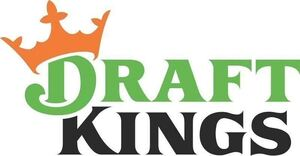

Trade Mark Journal No.2025/036 5 September 2025
WO0000001858447 (41)
Office of origin: United States of America
Date of International Registration:14 April 2025
Date of designation in the UK:
14 April 2025

The mark consists of the wording "DRAFT KINGS" presented in stylized letters with the word "DRAFT" in green, with an image of an orange crown over the letter "D", and the word "KINGS" in black.
The mark contains the colours orange, black and green.
The mark consists of the wording "DRAFT KINGS" presented in stylized letters with the word "DRAFT" in green, with an image of an orange crown over the letter "D", and the word "KINGS" in black.
International priority date claimed: 18 October 2024
(United States of America)
(98808375)
- Class 41
- Entertainment services, namely, providing online casino-style games and games of chance; entertainment services, namely, providing online slot machine-style games; entertainment services, namely, online casino-style gaming; gaming services in the nature of casino gambling; entertainment services, namely, providing games of chance via the Internet; bookmaking services, namely, providing information related to sports betting; organizing, arranging, conducting sports betting and gambling tournaments, competitions and contests; entertainment services, namely, providing sports and esports programming in the nature of a continuing program featuring sports and esports delivered by television, radio, the internet; entertainment services in the nature of a continuing program featuring previews, alerts, replays, video clips of sporting competitions, and web cam feeds, distributed via various platforms across multiple forms of transmission media, all in the field of sports and esports; entertainment services in the nature of fantasy sports and esports leagues, provided via downloadable mobile software applications and distributed via various platforms across multiple forms of transmission media.
DK Crown Holdings Inc.
Representative: Lawrence R. Robins FisherBroyles LLP, 4 MacQuarrie Lane, Westford MA 01886, UNITED STATES OF AMERICA